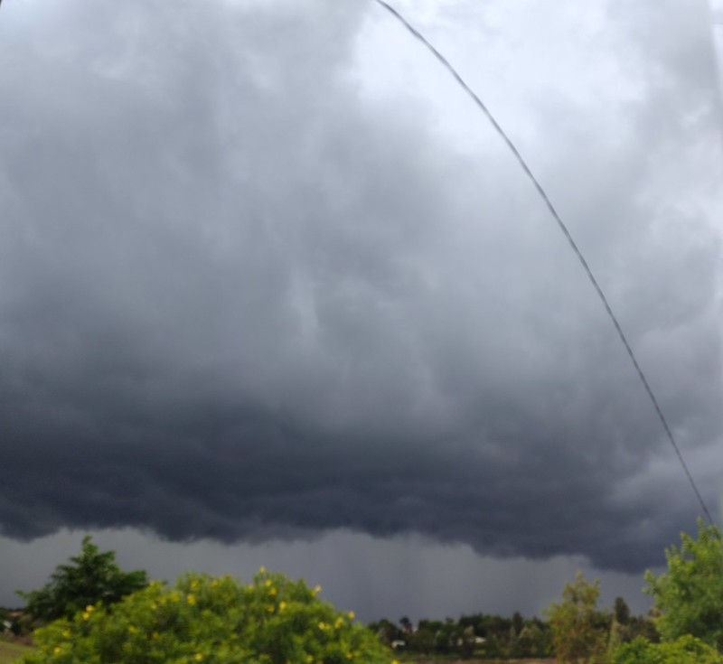

"I love a gay sky," the Fat Prince said. This is my most favorite line in the Caucasian Chalk Circle. I normally get excited at the site of low hanging nimbus clouds. Back in my primary school years, we used to get rainfall almost throughout the year. I loved it when it was raining. Everything about the rainy seasons felt good from the flourishing gardens, playing with pools of water together with my little brothers, not to mention the warm rainy nights. With climate change, a lot has changed and we no longer enjoy rains throughout the year as we used to.
A cloudy sky at Nyeri County, Kenya
Two good years
The year 2019 was very dry in the beginning and this condition extended into the month of April when the heavy rains normally start in Kenya. The rains started in May but did not last long enough. However, mid that year we started experiencing rains that lasted up to the end of the year. The rains were consistent and some parts of the country experienced floods. This did not go unnoticed by me out of my ever present concern about the weather.
We ushered in 2020 and the rains kept on falling. I was particularly happy with the consistency of these rains. During that year, there was a locust infestation in the Eastern Africa region. I was reading an article (can’t remember its name) on this locust infestation when I first saw the concept of the Indian Ocean Dipole and it really sparked interest in me. This concept helped me understand the reason behind the ‘ideal’ climate that we had been experiencing since mid-2019 up to and including the whole of 2020.
The Indian Ocean Dipole
The oceans play an important role in determining the weather and climate of the earth. They are the source of most of the water that falls on land as rain. In simple terms, when the surface of the ocean gets heated, water evaporates and it rises up to form clouds that later fall as rain.
The Indian Ocean Dipole is a condition that occurs when there is difference in surface temperatures of the opposite sides (Eastern and Western) of the Indian Ocean. The dipole is either positive, negative or neutral. A positive dipole occurs when the temperatures of the ocean are higher on the western parts of the ocean compared to the eastern parts. A negative dipole is the opposite of the positive dipole i.e. higher temperatures in the eastern parts of the Indian Ocean compared to western parts. A neutral dipole occurs when the temperatures on the eastern and western sides are relatively the same.
Africa lies to the West of the Indian Ocean and Australia to the East. This means that the dipoles play a major role in determining the rainfall patterns of these two land masses. When the ocean surface is warmer on one side, the neighboring land masses are more likely to experience high amounts of rain while the land masses neighboring the colder side are likely to experience dry conditions.
The positive dipole
The positive dipole is associated with increased chance of rain in the Eastern Africa region and increased chance of dry conditions in East and South-Eastern Australia. Around mid-2019, we had a positive dipole that led to increased rain in the Eastern Africa region and dry conditions in Australia followed by intense bush fires. The dipole peaked at around October seeing continued wet season in the Eastern Africa region with some places experiencing floods. The rainy conditions extended throughout 2020 in the Eastern Africa region with Australia recording below average rainfall nationally. This positive dipole is the strongest in six decades hence the extreme conditions on either side of the Indian Ocean.
The negative dipole
The negative dipole occurs when the eastern parts of the Indian Ocean are warmer compared to the western parts. This results in an increased chance of rain in the Australian side and reduced chance of rain in the Eastern Africa side. The eastern parts of the Indian Ocean have been relatively warmer compared to those on the western parts in 2021 and this explains the low rainfall levels in the Eastern Africa region. On the other hand, the Australian side has been receiving above average rainfall this year.
Conclusion
The Indian Ocean Dipole plays an important role in determining the rainfall patterns of the Eastern Africa region and Australia. The Indian Ocean Dipole is similar to the El Nino and La Nina experienced in the Pacific Ocean.